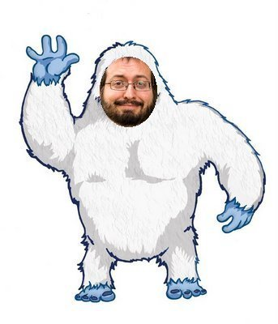

This is Not Andy
In this world, there are many imposters. People try to copy eachother or pretend somthing they're not in order to achieve fame. Many trolls are claiming they are our savior Andy. Awesome Andy is here to prove these theories wrong and prove ther is only one true Andy. Here are all the people who show up when you google Andy Famiglietti and are in fact not him:
When you see this you might think it is Andy at first, however, this is a clear image of George Mike and his long flowing hair. The outfit does not even represent Andy nor does the lack of stylish glasses. Also, the long flowing hair does not stand a chance against Andy's curly locks. While George does have hits like "Careless Whisper", he cannot use computers quite like Andy can.
Again, another Andy imposter. This person tried very hard to be Andy, but they only ended up to be a student at Saint Josephs, not a wonderful teacher that Andy is. Ah yes, Justin here has much to learn before he's ready to be great... Like Afam!
Here we have the imfamouse Patrick Stump. Sure he may have the glasses and the unique face that Andy has, but Awesome Andy can assure you that this is an imposter who can no longer live his days out happily. While true, Patrick here is a famous Musician for the band Fall Out Boy, he has recently hit rock bottom. The bands old material was very good, while the later stuff... not so much. Pat had to go into hiding and tried disguising himself as Afam. The gigs up Stump!
Fooled again? not surprising. This person might be the best imposter yet. The glasses, the hair, the skin color, all of it! He even has the look of a champion that has just defeated several dragons and graded all his papers for the year after a great day of teaching. He's probably thinking how great it is to be Andy, but we all know that some things are too good to be true and this is one. Andy is perfect, not really great. This imposter messed up big time.
A very believeable Andy, yet still an imposter. Fun fact, this is actually celebrity and rapper Snoop Dog. The only way to tell that this is not Andy is by the smell of weed. Snoop Dog may have changed his name to Snoop Lion or Snoop AFam, but his hobbies will never change. Keep making good music Snoop, but next time try to be a better Andy okay?

Wow... if it isn't Andy Famigliyetti. He is the King of copy. The wizard of the web. Not only is he a perfect copy of Andy, but they are also arch enemies. All the crime and trash Andy fixes, is cause by Famigliyetti. Nothing stands in his way of terror as long as Andy is out of the way. But the legend goes is that Andy defeated him in a coding challenge many years ago. But stones will be stones and he's gone now. Job well Done Andy.